Die Herren aus Pontedera meinten in den 60er auch juengere Kundschaft anzulocken und kamen auf die Idee eine kompaktere Vespa zu designen: die Smallframe.
Von der 50N aus 1963 bis zur PK-Reihe aus 1983, letztere XL(2) leider schon mit Plastik-Anteile, aber wenigstens kann man das Zeugs halbwegs auf ein Minimum reduzieren. Dafuer wurde die Technik auch besser.
Diese hier ist eigentlich meine 2te Vespa und die habe ich aus mehrere separate Kaeufe zusammengestellt: Motor (ohne Batterie), Rahmen usw.
Erstmal die Motorrevision, da dieser hier schon etwas mitgenommen aussah, auch wenn das nichts ueber den inneneren Zustrand aussagt, aber ein Lagerwechsel ist Pflicht, danach ggf. die Primaeruebersetzung usw.
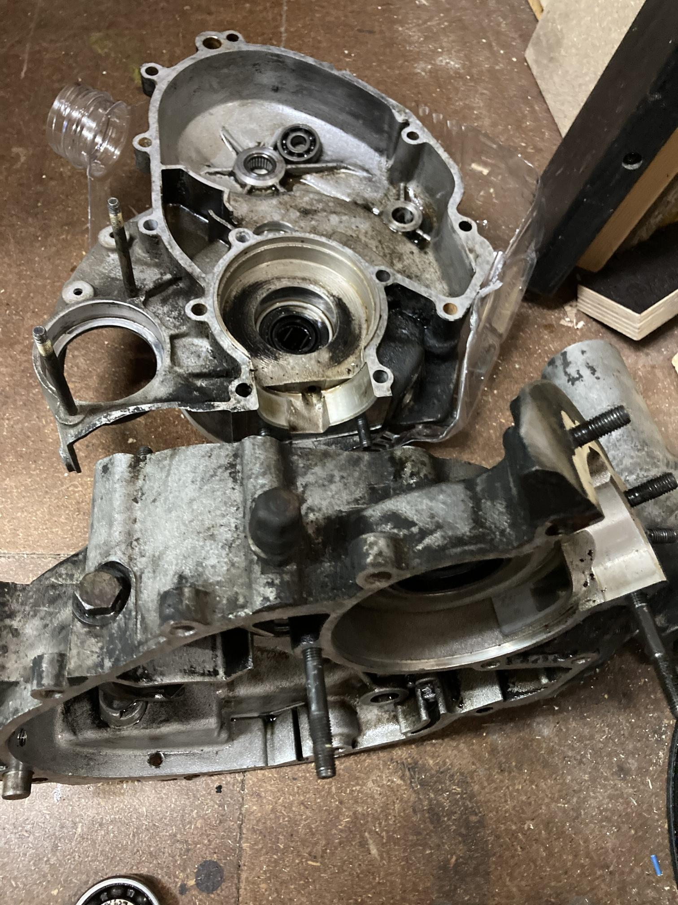 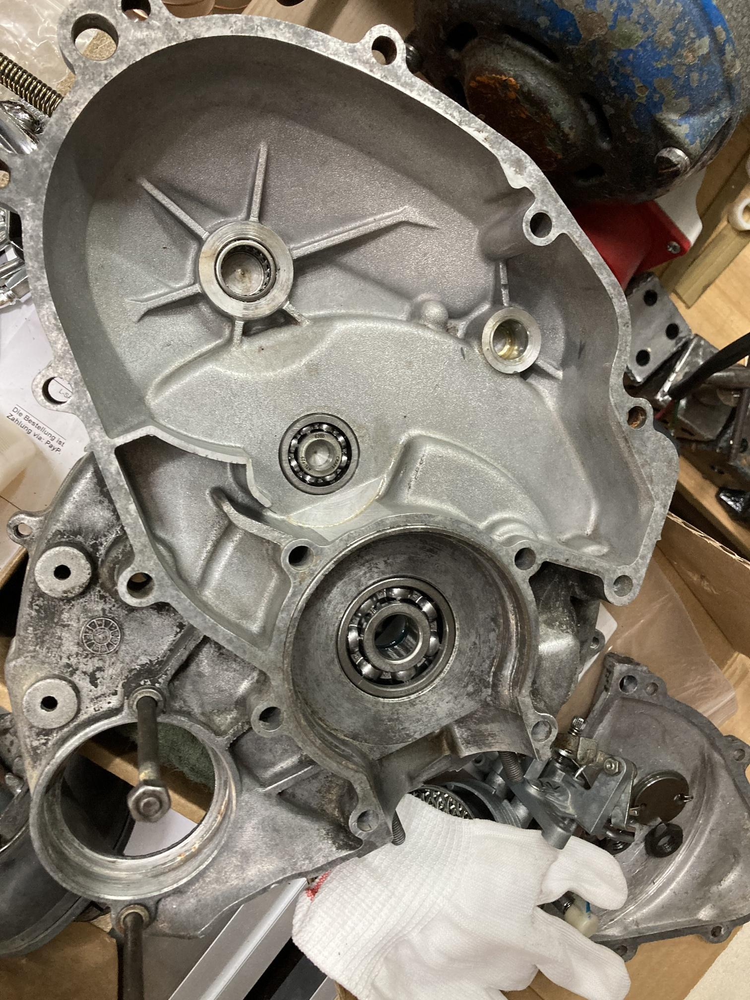 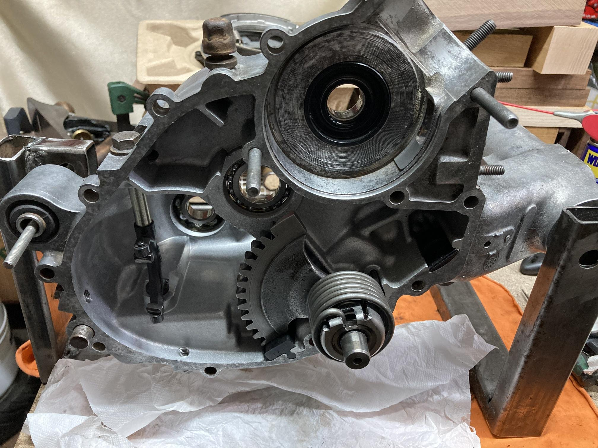 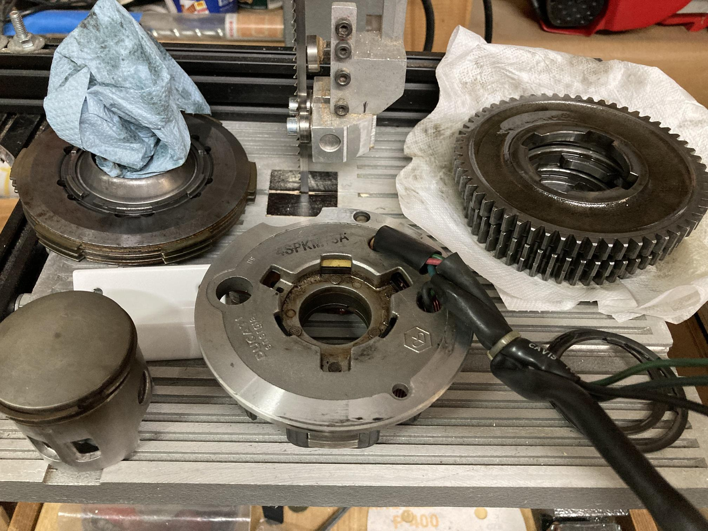 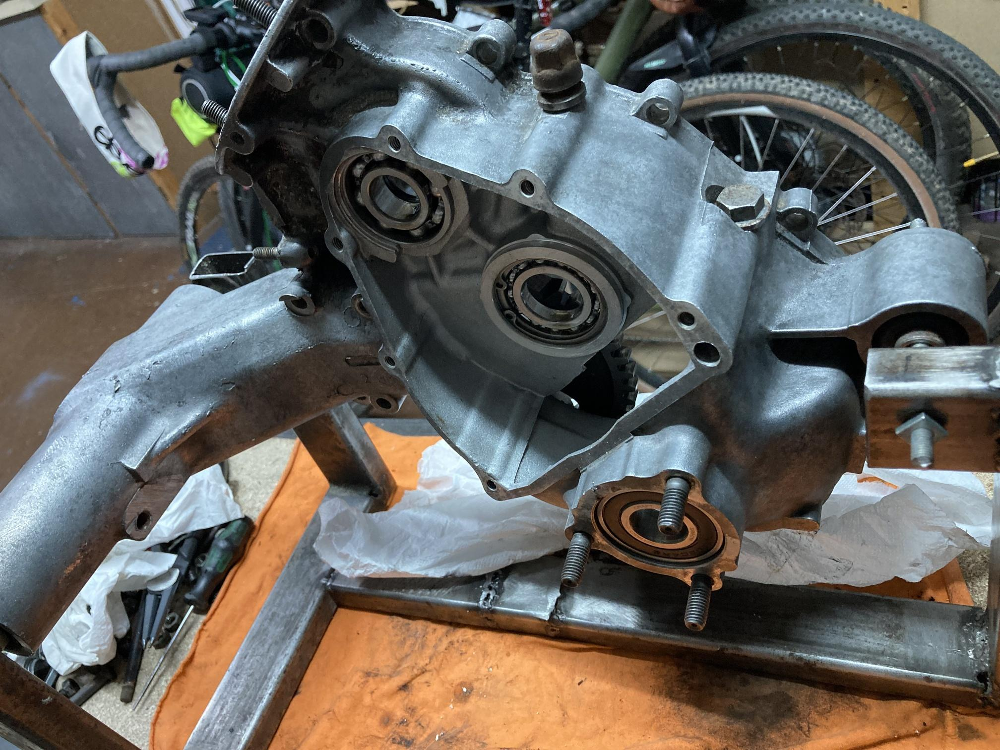 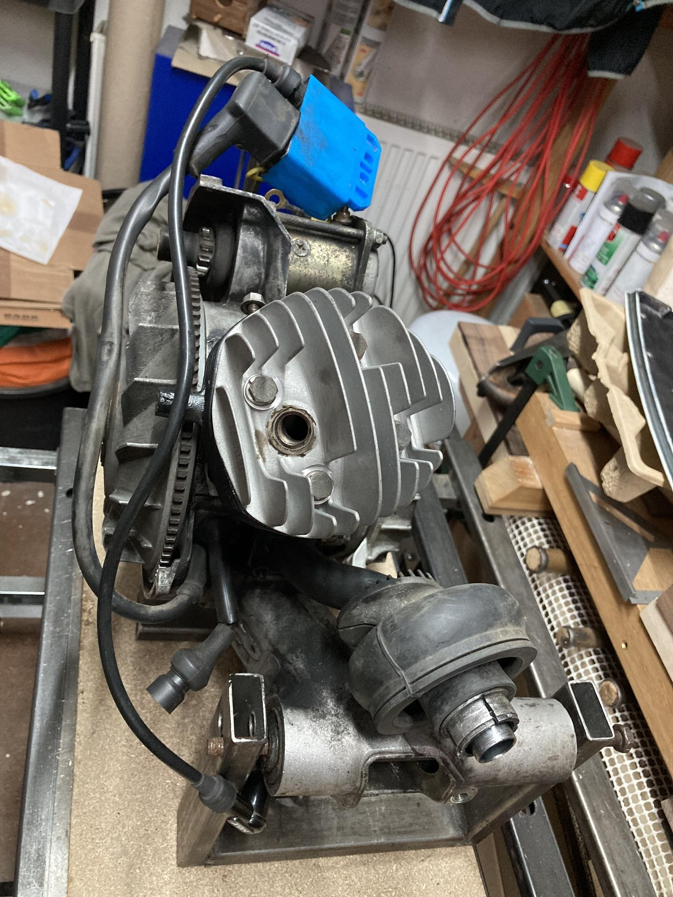
Am Ende sollte sowas dann das Ergebnis sein:
Dann war da noch der Rahmen; da musste sogar noch was geschweisst werden,
die komplette untere Seite. Man sieht hier schon den grundierten Rahmen;
und ja in "billig" mit Chassislack O.H. der Firma Korrossionsschutz-depot.
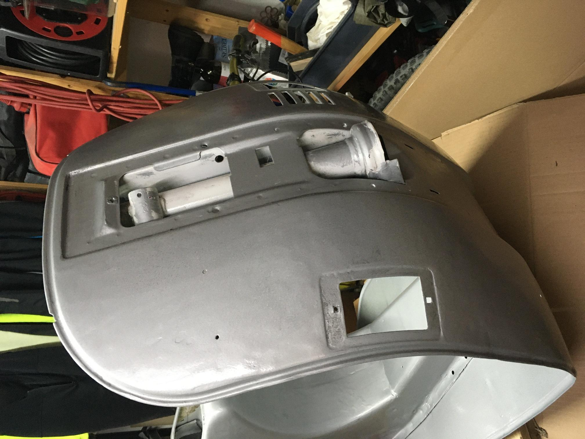 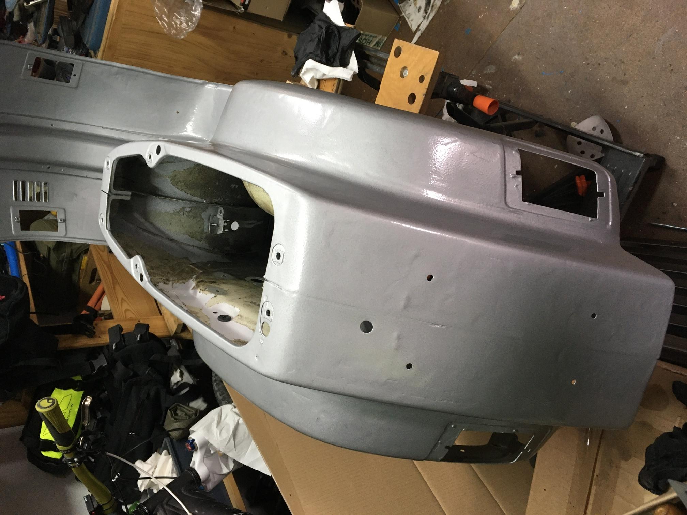 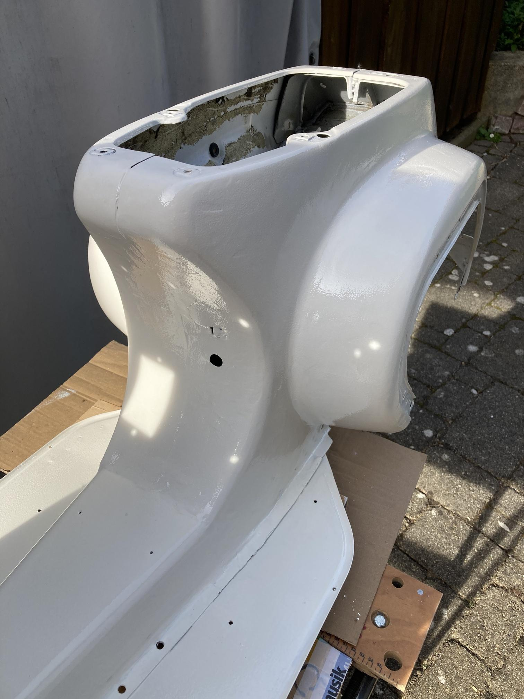 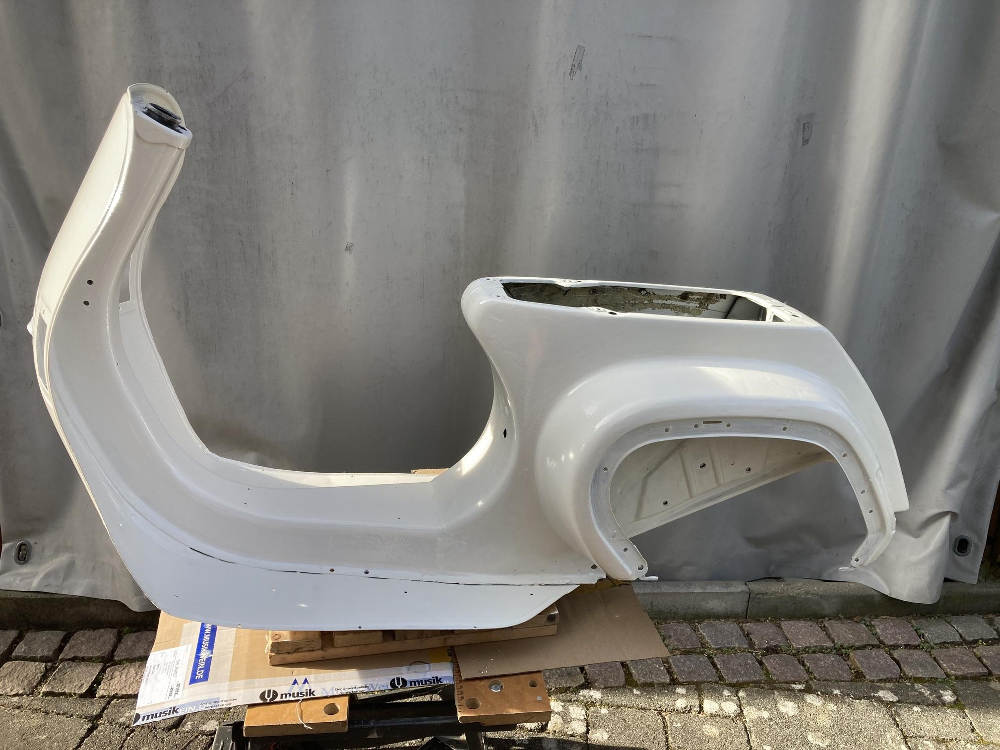 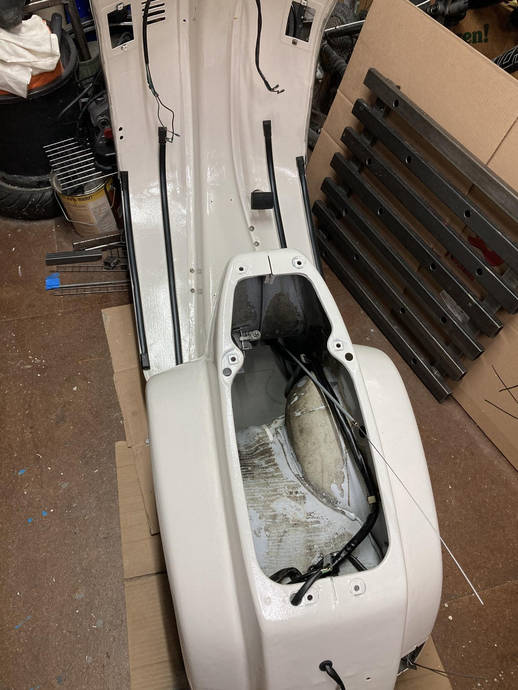 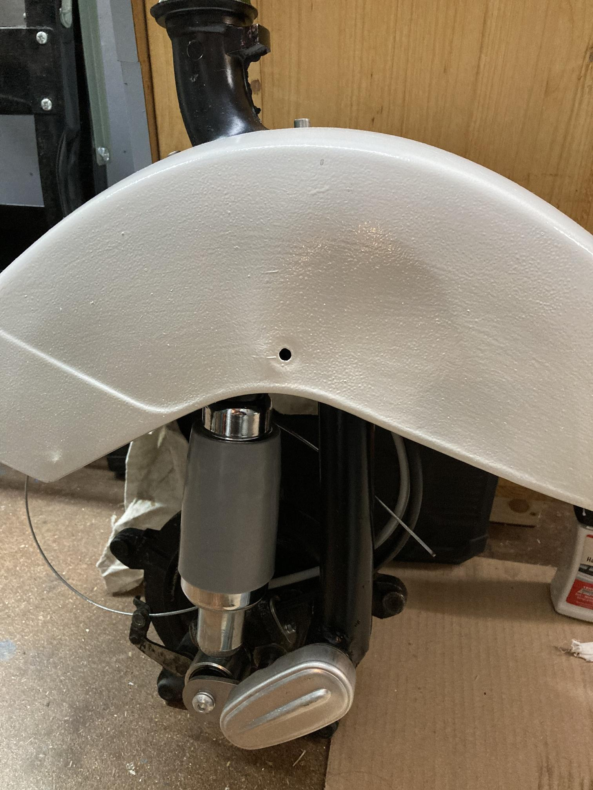
Nachdem das alles (durch-)getrocknet war, sieht das gar nicht so schlimm aus.
tbc